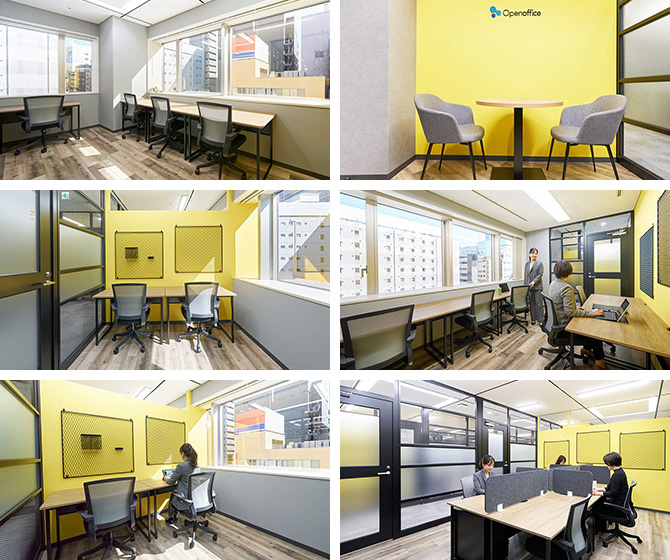

【個室レンタルオフィス】
オープンオフィス新横浜
オープンオフィス新横浜駅前は、新横浜エリアの中でも最寄である新横浜駅から徒歩4分と、便利なロケーションに位置します。 新横浜駅には在来線の乗り入れだけではなく、新幹線停車駅でもあり、出張先のサテライトオフィスとしてもフレキシブルにご利用いただけます。
オープンオフィス新横浜が提供するオフィスサービス
-
 高速インターネット＜光ファイバー＞
高速インターネット＜光ファイバー＞
- 100Mbpsの光ファイバーによるブロードバンド環境をご用意しました。各部屋に配線済みですので、パソコンに繋げばすぐLAN経由で高速インターネットを利用出来ます。
-
 ネットワーク・カラーレーザープリンタ+スキャナー
ネットワーク・カラーレーザープリンタ+スキャナー
- ネットワークを利用して、各お部屋のパソコンから印刷できます。プリンタをご用意いただく必要もございません。
スキャナー機能も搭載しております。
-
 カラーレーザーコピー
カラーレーザーコピー
- フロア内にご用意してあります。フロア内にご用意してあります。カード方式でコピーが出来ますので、小銭の準備が不要です。
-
 シュレッダー
シュレッダー
- 機密情報の破棄にご利用いただけます。
-
 ICカードキーによる入室管理
ICカードキーによる入室管理
- 専用ICカードを使ったホテル式のスマートシステムを用いて、セキュリティーを向上させています。
-
 宅配ロッカー
宅配ロッカー
- 24時間、荷物の受け取りが可能な宅配ロッカーを採用しています。
-
 ミーティングルーム（会議室）
ミーティングルーム（会議室）
- 商談・会議にご利用いただける共有スペースをご用意しています。インターネットで簡単に予約をしていただけます。
-
 無線LAN（WiFi）
無線LAN（WiFi）
- 共有スペースとミーティングスペースにて、無線LAN(WiFi)サービスをご利用いただけます。
-
 快適フリースペース ※Luxury Lounge
快適フリースペース ※Luxury Lounge
- ショートミーティングをしたい時、ちょっと気分を変えて仕事したい時、「使える」快適なフリースペースです。

オープンオフィス新横浜の特徴

最寄り駅で新幹線が利用可能
新横浜駅徒歩4分
近隣に飲食店多数あり
窓面が三面確保可能
静観なエリア
オフィス周辺のMap
オープンオフィス新横浜近隣のスポット
- ■銀行
- 静岡銀行新横浜支店
横浜銀行新横浜支店 - ■レストラン
- スターバックスコーヒー横浜店
ドトール珈琲農園新横浜店
星野珈琲新横浜店
タリーズコーヒー新横浜店 - ■ショップ
- セブンイレブン
ファミリーマート
ローソン
エニタイムフィットネス
- ■ホテル
- 新横浜プリンスホテル
ダイワロイネットホテル新横浜 ホテルクロス
オープンオフィス新横浜の住所・アクセス
- 住所:
- 〒222-0033 神奈川県横浜市港北区新横浜二丁目6-23 金子第2ビル6F
- 電車からのアクセス:
- 横浜市営地下鉄ブルーライン「新横浜駅」 徒歩4分